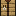
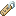
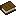
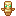

Pintar mundo
Desenhe biomas, modele relevo e coloque estruturas.
Abrir ferramenta ↗WORLDIFY · FERRAMENTAS
Escolha uma ferramenta. Seus mundos ficam no seu aparelho.
Desenhe biomas, modele relevo e coloque estruturas.
Abrir ferramenta ↗Remova uma área para o jogo regenerar pela seed.
Abrir ferramenta ↗Gere uma cópia em Sobrevivência sem cheats.
Abrir ferramenta ↗Edite itens, armadura, XP e Ender Chest.
Abrir ferramenta ↗
BETAPosicione uma .mcstructure no mundo.
Abrir ferramenta ↗
Ajuste a identidade e o desafio do mundo.
Abrir ferramenta ↗Mobs, clima, dia e noite, respawn e outras regras.
Abrir ferramenta ↗Instale ou remova pacotes na cópia do mundo.
Abrir ferramenta ↗
Confira as flags e os dados do arquivo.
Abrir ferramenta ↗
Revise as opções de Hardcore do mundo.
Abrir ferramenta ↗Organize metas e acompanhe seu progresso manual.
Abrir ferramenta ↗Prepare addons ou converta uma .litematic.
Abrir ferramenta ↗Nenhuma ferramenta encontrada.
Limites e recursos variam com o plano. Ver planos · Tutorial e texturas